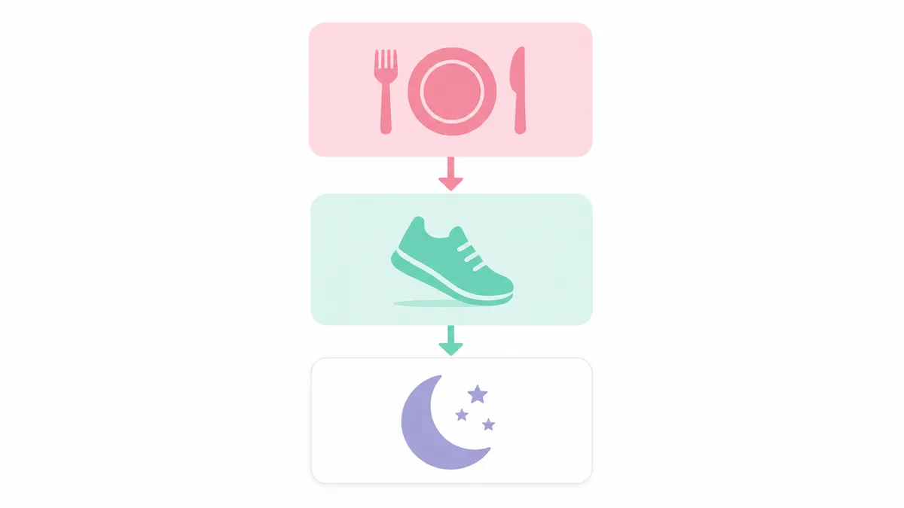

1週間本気ダイエット、まず結論からお伝えします
「今週こそ本気でやせたい」と思ったなら、食事70％・運動20％・睡眠10％のバランスで取り組むのが最短ルートです。
この記事では月曜〜日曜の7日間、具体的な食事メニューと運動スケジュールをそのまま使えるかたちでご紹介します。
1週間ダイエットを成功させる3つの基本ルール
ルール①：1日の摂取カロリーは「基礎代謝＋200kcal」を目安に
極端な食事制限は体に負担をかけます。成人女性の基礎代謝は平均1,200〜1,400kcal。そこに活動分200kcalを加えた1,400〜1,600kcalを1日の目安にしましょう。
ルール②：たんぱく質を毎食20g以上とる
筋肉を落とさずに体を引き締めるには、たんぱく質が欠かせません。卵・鶏むね肉・豆腐・納豆・ギリシャヨーグルトを毎食1品以上プラスしてください。
ルール③：水を1日1.5L飲む
水分不足は代謝低下の原因になります。起床後・食前・入浴前後など、1日8〜10杯（計1.5L）を目標に意識して飲みましょう。

月〜日曜の7日間食事メニュー（例）
月曜日：リセットデー（約1,400kcal）
- 朝：オートミール50g＋バナナ1本＋無糖ヨーグルト100g
- 昼：鶏むね肉のサラダチキン100g＋玄米ご飯100g＋野菜スープ
- 夜：豆腐1丁＋ほうれん草の胡麻和え＋みそ汁1杯
- 間食：ナッツ20g（素焼き）
火・水曜日：維持デー（約1,500kcal）
- 朝：全粒粉トースト1枚＋ゆで卵2個＋トマト1個
- 昼：サバの塩焼き＋もち麦ご飯100g＋きのこの炒め物
- 夜：鶏もも肉（皮なし）のグリル＋ブロッコリー＋わかめスープ
木・金曜日：代謝アップデー（約1,500kcal）
- 朝：プロテインスムージー（豆乳200ml＋冷凍ベリー50g＋プロテイン1スクープ）
- 昼：ツナと野菜のパスタ（全粒粉）150g＋コンソメスープ
- 夜：豚ヒレ肉の蒸し料理＋根菜の煮物＋ご飯80g
土曜日：チートデー（約1,700kcal）
週1回、好きなものを1食だけ楽しむ日を設けると、ストレスが減り継続しやすくなります。ただし1食に留め、他の2食は通常通りにしましょう。
日曜日：準備デー（約1,400kcal）
翌週に備えて消化の良い食事を選びます。雑炊・うどん・蒸し野菜など、胃腸を休ませるメニューがおすすめです。
1週間の運動スケジュール（1日15〜30分）
月・水・金：有酸素運動15〜20分
ウォーキング（早歩き）・踏み台昇降・リズムジャンプなど、息が少し弾む程度の運動を15〜20分続けましょう。食後1時間後が効果的なタイミングです。
火・木：筋トレ20〜30分
自宅でできるスクワット20回×3セット・ヒップリフト15回×3セット・プランク30秒×3セットを組み合わせると、下半身と体幹をまとめて鍛えられます。
土・日：アクティブレスト
激しい運動はせず、ストレッチ10分＋軽い散歩30分程度で体を動かしながら回復させましょう。
1週間で体感できる変化の目安
食事・運動・睡眠（7時間以上）をバランスよく整えた場合、むくみの解消・体重0.5〜1kg程度の変化・お腹のすっきり感を感じる方が多いです。
ただし体質や生活習慣によって個人差があります。体重の数字だけでなく、体の軽さや肌の調子など「感覚の変化」にも注目してみてください。
食事管理をもっと詳しく知りたい方は、ダイエット食事管理の記事一覧もあわせてご覧ください。
よくある質問
1週間で何kg痩せることを目標にすればいいですか？
健康的なペースとして、1週間で0.5〜1kg程度の変化を目安にするのがおすすめです。それ以上の急激な減量は筋肉量の低下や体調不良につながる場合があります。まず「むくみを取る・食習慣を整える」ことを1週間の目標にすると無理なく続けられます。
運動が苦手でもこのプランは続けられますか？
はい、続けられます。このプランの運動は1日15〜30分の自宅メニューが中心です。スクワットや踏み台昇降はジムに行かなくても実践でき、体力に自信がない方はまず有酸素運動だけから始めてもOKです。食事の改善だけでも体の変化を感じやすくなります。